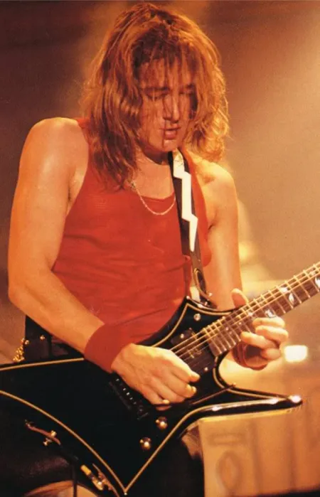
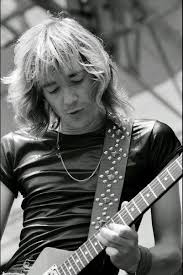
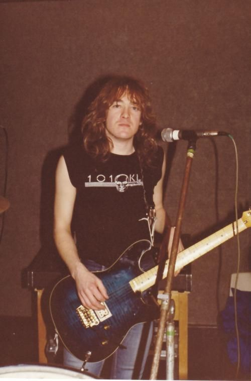
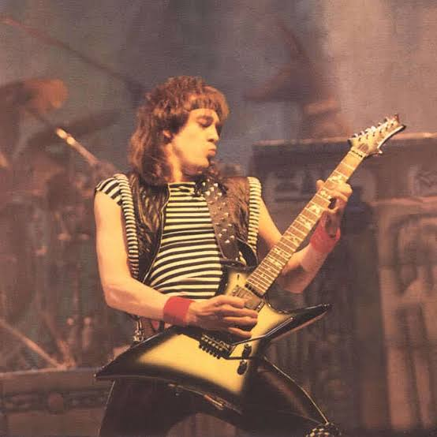

Historico
Nascido em Hackney, Smith cresceu em Clapton.[1][2] Deixou a escola aos 16 anos depois de completar o ensino secundário e logo em seguida começou a tocar guitarra, através de uma sugestão de seu amigo Dave Murray. Teve sua primeira guitarra comprada por Dave por 5 libras convertido em reais $31,40 Os primeiros esboços de banda começaram no porão de sua casa. Adrian Smith formou sua primeira banda chamada 'Evil Ways', junto com Dave Murray. Os shows eram geralmente tocando covers dos Rolling Stone, Pink Floyd e Beatles. Cinco anos depois a banda assinou com a DJM Records, esta sociedade rendeu dois singles. Nesta época a banda havia mudado seu nome para Urchin.[3] Quando as gravadoras começaram a investir no cenário punk, a banda se separou da gravadora. A banda também mudou sua formação com a entrada do jovem guitarrista Andy Barnet. A banda Urchin acabou em 1979.
Iron Maiden
Porem a grande oportunidade nasceu em 1980, quando foi Adrian Smith foi chamado para substituir Dennis Straton no Iron Maiden, banda na qual pertencia seu antigo amigo Dave Murray, com o Iron Maiden em 1981 lançou o álbum Killers. Em 1982, aconteceu uma das principais mudanças do Iron Maiden, o vocalista Paul Di'Anno abandonou a banda e foi substituído por Bruce Dickinson, que comandou o Iron Maiden durante sua melhor fase e se tornaria seu parceiro no futuro. Nesse mesmo ano, essa formação lançou o The Number of the Beast, um dos maiores clássicos da história do Heavy metal, além da faixa título, viraram sucessos "Run to the Hills", "Hallowed Be Thy Name", entre outras… Já consagrado pelo público, em 1983, o lançamento de Piece of Mind e mais sucesso. Adrian Smith ainda lançaria com o Iron Maiden os bem sucedidos Powerslave (1984), Live After Death (1985), que é o primeiro ao vivo oficial, Somewhere in Time (1986) e Seventh Son of a Seventh Son (1988). Ainda no Iron Maiden, Adrian lançou em 1989, seu primeiro disco solo, "Silver And Gold", através do projeto A.S.A.P. (Adrian Smith And Project), no qual participou Andy Barnet (ex-Urchin). No mesmo ano Adrian Smith anunciou sua saída da banda. Logo após sua saída do Iron Maiden, Adrian Smith formou o "The Untouchables", que mais tarde passou a se chamar Psycho Motel. O primeiro disco com a nova banda só veio em 1995, com o lançamento de "State of Mind". O disco foi bastante aclamado por público e crítica, apesar de ser bem diferente do som do Iron Maiden. No ano seguinte Adrian participou do disco solo de Michael Kiske (ex-Helloween), juntamente com Kai Hansen (Gamma Ray, também ex-Helloween), o disco chama-se "Instant Clarity". Em 1997 veio o novo do Psycho Motel, "Welcome to the World". No mesmo ano, Adrian Smith volta definitivamente à mídia, após ser convidado para ingressar na banda solo de Bruce Dickinson, que também havia saído do Iron Maiden. Com o Bruce Dickinson, Adrian lançou o excelente disco "Accident of Birth". No ano seguinte veio o que se tornaria o melhor disco de Bruce Dickinson, "The Chemical Wedding". A turnê deste disco chegou a passar pelo Brasil, onde foi gravado o disco ao vivo de Bruce Dickinson, "Scream For Me Brazil" (1999). Mas ainda em 1998 foi anunciada a volta de Bruce Dickinson e Adrian Smith ao Iron Maiden, que passaria a contar com três guitarras. Durante a sua carreira na banda Adrian Smith foi um guitarrista diferente dos demais, pois sempre deu preferência ao feeling à técnica, conseguindo inclusive dois prêmios de melhor guitarrista na década de 1980.
Galeria



